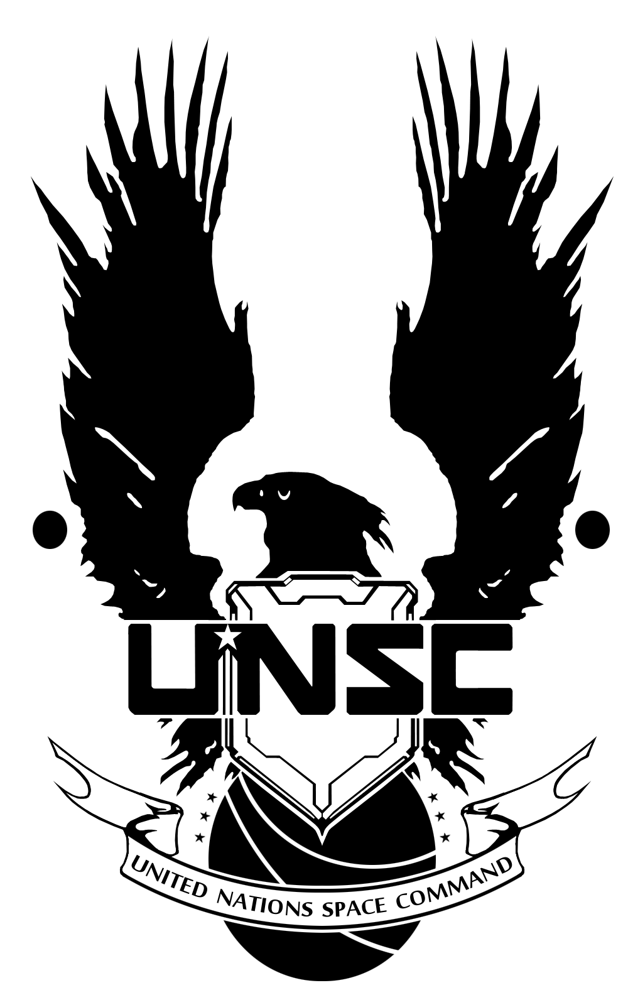

UNSC
Der United Nations Space Command ist eine Abteilung des Millitäres die für Operationen im Weltraum zuständig ist. Sie gehört zur Erden Regierung und kümmert sich primär um die Verteidigung der Erde.

Quellen und weiter Informationen
UNSC, Halo wikia